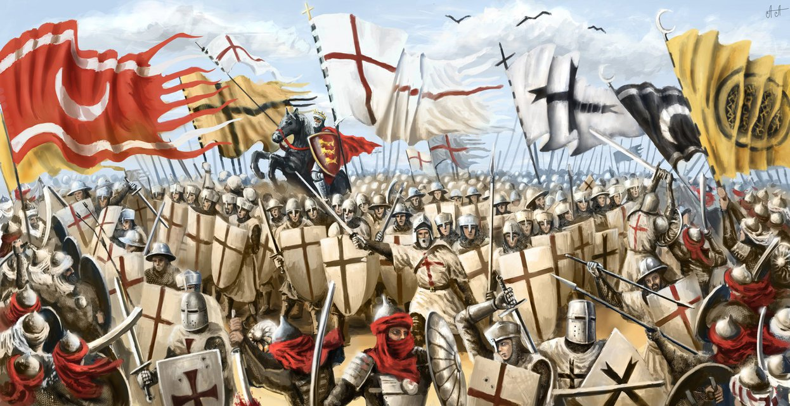
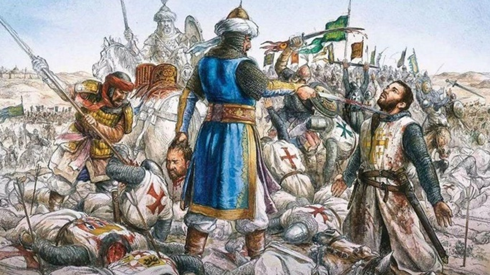

Haçlı Seferleri
HAÇLI SEFERLERİ (1096-1270)(1072 rivayet)
XI. yüzyılın sonlarında başlayıp XII. yüzyılın sonlarına kadar
devam eden, Hıristiyanların kutsal Kudüs şehrini almak, Türk-İslam
ilerleyişini durdurmak, doğunun zenginliklerini ele geçirmek
amacıyla yaptıkları savaşlara, “Haçlı Savaşları” denir.
► Bu savaşlarda Hıristiyanlar saldırıda, Müslümanlar savunmadadır.

Haçlı Seferlerinin Nedenleri
1. Ekonomik nedenler:
a) Doğu ülkelerinin zenginliği
b) Avrupa’nın yokluk içinde bulunması
2. Dinsel nedenler:
a) Hristiyanların kutsal yerleri geri almak istemeleri
Hristiyanlar için kudüsün önemi fazlaydı peygamberlerin birçoğu ve Hristyanlığın ana pegamberi hz.isanın hayatının büyük çoğunluğu burada geçmiştir.birtakım
incilde belirtilen olay ve mekanlarda oradadır.
b) Kilise ve papalık teşkilatının halkı kışkırtması ve din adamlarının etki alanlarını genişletmek istemeleri
b)Dönem Papası 3. innocentius zamanında papazlar ve vaizler halkı galyana getirerek doğu dünyasının muhteşem güzelliklerini Bu savaşa katılanlara cennetin
müjdelenmesi üzerine çoçuk haçlı seferi organizyonları başlamıştır.Özellikle alt sınıf çoçuklar bu organizyondaydı.1212 de katolik kilisesi tarafından
özellikle çoçukların içinden rüylarında kutsal müjde verildiği onunla beraber savaşa katılmaları üzerine cennete giebilecekleri kral ve papa tarafından
desteklenmiştir çoçuklarda 2 çoçuk seferinde gemilerle beraber rivayetlere göre 50 bine yakın çoçuk katılmıştır.ancak daha savaş meydanına gidemeden çoğu
boğulmuş esir düşmüş dağılmıştır.bu olayların dan sonra ana haçlı seferleride sona ermiştir bundan sonra 5 haçlı seferi daha düzenlenmiştir ancak bunun
sonucunda zafere ulaşılamamıştır.
c) Hristiyanların Kudüs’ü ziyaret edince cennete gideceklerine inanmaları
bu papa ve vizlerin halkı manipule etmek için kullandıkları dayanaklardan birisi
d) Kluni tarikatının çalışmaları
kluni tarikatı 9 ve 12 yüzyıllar arasına geniş bir mekanda aktif olmuş bir oluşumdur.hristiyan aleminde etkileri ve gücleri oldukça fazla olan bir güçtür.
e) Katolik kilisesinin Ortodoks kilisesini etkisi altına almak istemesi
katolik ve ortadoks hristiyanlık inancı içerisinde mezheplerden ikisidir.
3. Sosyal ve Siyasal nedenler:
Merkezi krallıkların yeniden güç kazanma istekleri
merkezi krallık monarşidir.monarşi tek adam kafasıdır.hristiyanlarda kaybettikleri eski roma günlerine dönme umuduyla çabaladılar.
Derebeylerin doğuda da feodal düzeni kurmak istemeleri
feodal düzende hristiyanlar içinde bir roma sevdasıdır.kudüs ve çevreisinide derebeylik haline getirip romayı diriltme çabaları sonuç bulamamıştır.
Soyluların macera arzulan ve serilerin yeni toprak ve zenginlikler elde etmek istekleri
soylu ve zenginler kaynak ve daha fazla kaynak arzuluyordu doğuda gayet zengindir.
Türklerin kısa sürede Anadolu’ya sahip olması (Malazgirt Savaşı)
malazgirte alınan mağlubiyet telafi edilmek istenmiştir.
Bizans’ın Türklere karşı Avrupa’dan yardım istemesi.
türkler olmasaydı ne dönem arap milletleri kudüsü savunanlar islam dünyası başarıya ulaşamazdı türkler avrupaya bağlanan kara parçasını anadoluda o dönem kesmiştir.
NOT: Müslüman ülkeler, iç çatışmalar mezhep kavgaları nedenleriyle zayıflamışlar, haçlı seferlerine karşı koyacak güçleri kalmamıştı. Haçlı tehlikesini
önleyen Türkler olmuştur.

1. Haçlı Seferi (1096):
Krallar katılmamış, derebeyleri katılmıştır. Bizans İmparatoru, Anadolu’da alınacak yerlerin Bizans’a verilmesi şartıyla haçlıları Anadolu’ya geçirdi.
Haçlılar İznik’i aldı. Anadolu Selçuklu Sultanı I. Kılıç Arslan haçlı ordusuyla savaşmıştır. Haçlılar Urfa’yı ele geçirerek, Kudüs’ü almışlardır. Kudüs
Krallığı adı altında bir devlet kurdular. Urfa, Antakya, Trablus kontluklarını kurarak, Kudüs Krallığına bağlandı.
2. Haçlı Seferi (1147-1149)
Neden: Musul Atabey’i İmadettin Zengi’nin Urfa’yı Hıristiyanlardan alması. Papanın çağrısı üzerine ikinci sefer başladı. Fransa Kralı VII. Lui ile Alman
İmparatoru III. Konrad bu savaşa katıldı.
Sonuç: Anadolu Selçuklu Sultanı I. Mesud, Alman İmparatorunu Konya ovasında yendi. VII. Lui Antalya yoluyla Suriye’ye geçti. Haçlılar bu seferden sonra
Anadolu üzerinden sefer yapamadılar.
3. Haçlı Seferi (1189-1192):
Neden: Selahaddin Eyyubi’nin Latin Krallığına karşı saldırıya geçti. Hittin savaşında, krallığın ordusunu bozguna uğrattı ve Kudüs’ü 1187 ‘de aldı. Alman
İmparatoru Frederik Barbaros, Fransa Kralı Filip Ogust ve İngiltere Kralı Arslan Yürekli Rişar bu savaşa katıldılar.
Sonuç: Haçlılar başarılı olamadı. Bu dönemde, Anadolu’da siyasi birlik parçalanmıştır.
Halkın Haçlı Seferi'ne liderlik eden Hermit Peter'in minyatürü (Egerton 1500, Avignon, 14. yüzyıl)
Halkın Haçlı Seferi’ne liderlik eden Hermit Peter’in minyatürü (Egerton 1500, Avignon, 14. yüzyıl) (Kaynak : wikipedia.org)
4. Haçlı Seferi (1202-1204):
Neden: Eyyubilerin haçlılarla mücadelelerini sürdürmeleri, Yafa ve sahildeki bazı kaleleri almaları üzerine Papa III. İnosan’ın yeni sefer çağrısında
bulunması. Deniz yoluyla düzenlenmiştir. İstanbul’da taht mücadelesi ve iç isyanların olması üzerine, haçlılar İstanbul’a gelmişlerdir.

Haçlı Seferleri’nin Sonuçları
1. Siyasi Sonuç
-Haçlılar, bu seferler sonunda amaçlarına ulaşamadılar, Bizans, Türk ilerleyişine engel olamadı.
-Yeni devletler kuruldu (İznik Rum, Trabzon Rum Pontus, İstanbul Latin Krallığı).
-Derebeyler eski güçlerini yitirmişler, merkezi krallıklar güçlenmeye başlamıştır.
-Coğrafi buluntuların başlamasında etkili olmuştur.
-Türklerin Batı’ya (Avrupa’ya) yaptıkları seferler durdu.
2. Ekonomik Sonuçları
-Müslümanlarla Avrupalılar (Doğu-Batı) arasında ticari ilişkiler gelişti.
-Akdeniz limanları önem kazandı.
-Doğu’daki pek çok tarım ürünü ve meyveler Avrupa’da da yetiştirilmeye başlandı.
– Haçlıların Anadolu ve Suriye’de yağmalama, yakıp yıkma ve insanları öldürmeleri İslam dünyasını yoksullaştırmıştır.
3. Dini Sonuç
-Avrupa’da kilise ve din adamlarına duyulan güven azaldı.
– Türkler, Haçlılara karşı verdikleri mücadele ile İslam dünyasının sevgisini kazandılar.
-Kilise baskısı azaldı, akılcı ve bilimsel düşünce gelişmeye başladı.
– Hıristiyan-Müslüman çatışması başladı.
4. Sosyal Sonuç
-Sınıflar arası dengesizlik azaldı, halk arasındaki sınıf farkları ortadan kalktı.
– Burjuva sınıfı güçlenmeye başladı.
-Feodalizm (derebeylik) gücünü yitirmeye başladı.
5. Bilimsel Sonuç
– Avrupalılar Müslümanlardan pusula, kâğıt, top, barut gibi yeni buluşlar öğrendiler. Bunun sonucunda Avrupa’da düşünce, bilim ve sanatta büyük ilerlemeler
oldu.
– Avrupa İlkçağ kültürü ile tanıştı.
KAYNAKÇA
TarihSitesi.com
Erturan Kantaş
Hüseyin NihalATSIZ